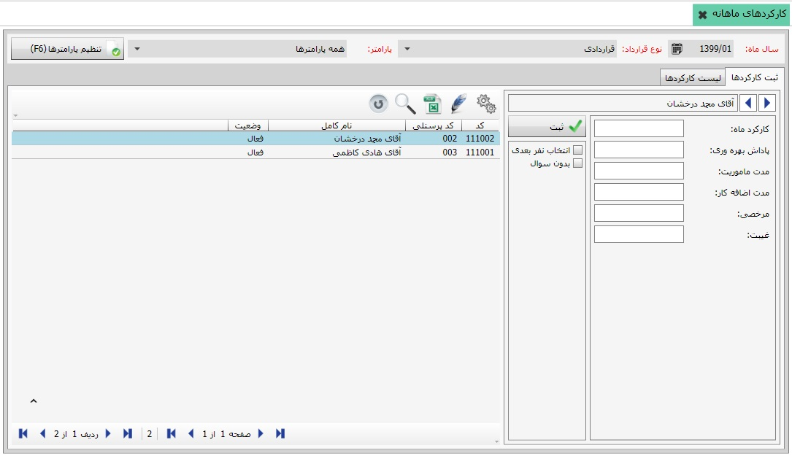
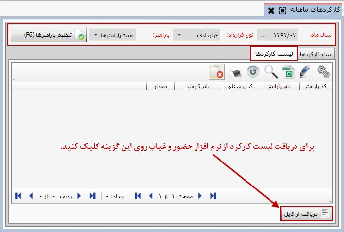
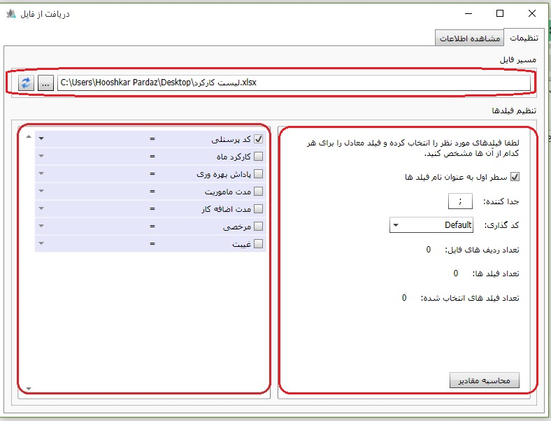
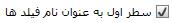
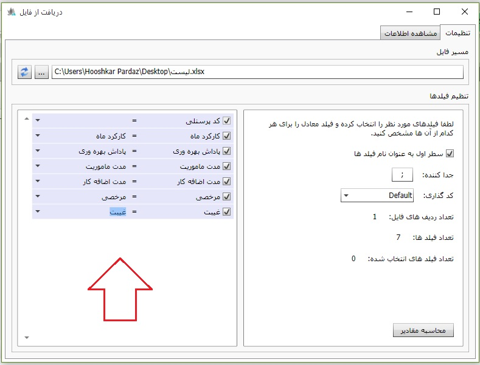

کلیک کنید تا پنجره مربوط به آن باز شود:
کلیک کنید تا پنجره مربوط به آن باز شود:
در توضیحات مربوط به تعریف انواع قرارداد و عوامل آن ها گفته شد که گروهی از پارامترهای قرارداد دارای عملکرد کارکردی هستند. این مطلب بدین معناست که عاملی که دارای عملکرد کارکردی است باید بر اساس کارکرد ماه کارمند مورد نظر مقداردهی شود. برای ثبت کارکرد ماهانه برای هر کارمند می توانید از بخش «عملیات روزانه» روی منوی «کارکردهای ماهانه» کلیک کنید تا صفحه ی زیر نمایان شود.

در ابتدا که صفحه «کارکردهای ماهانه» باز می شود تنها فیلدهای موجود در بالای صفحه فعال می باشند. برای ثبت کارکرد ماهانه ابتدا باید مقادیر فیلدهای بالای صفحه از جمله سال ماه، نوع قرارداد و پارامتر را تعیین کرده و سپس تایید نمایید. در فیلد سال ماه، سال ماهی که قرار است برای آن کارکرد ماه تعیین شود را انتخاب نمایید. فیلد نوع قرارداد شامل انواع قراردادی است که در سیستم تعریف کرده اید، در این قسمت نیز یکی از انواع قرارداد را برگزینید. همچنین در فیلد پارامتر نیز لیست عوامل با عملکرد کارکردی برای نوع قرارداد انتخاب شده قرار دارد، می توانید عوامل را به صورت تک تک انتخاب کرده و و برای هر کارمند مقداردهی کنید یا گزینه همه پارامترها را از لیست انتخاب کنید تا بتوانید عوامل کارکردی را به صورت یکجا برای هر کارمند مقداردهی نمایید. در صورتی که مقادیر فیلدهای گفته شده تکمیل گردید، روی کلید کلیک کنید، صفحه «کارکردهای ماهانه» به صورت زیر نمایش داده می شود:
شکل بالا صفحه کارکرد ماهانه را پس از تایید مقادیر فیلدهای بالای صفحه نمایش می دهد. همان طور که مشاهده می کنید کلید تایید و مشاهده در شکل قبل به کلید تنظیم پارامترها در شکل بالا تبدیل شده است. برای تغییر مقادیر فیلدهای بالای صفحه دوباره باید روی کلید تنظیم پارامترها کلیک کنید.
این صفحه دارای دو تب می باشد که تب اول آن «ثبت کارکردها» می باشد. این تب شامل دو قسمت است که در سمت چپ لیست کارمندان تعریف شده در سیستم که برای آن ها حکم استخدام صادر شده است نمایش داده می شود. در سمت راست صفحه، عوامل کارکردی قرارداد انتخاب شده در بالای صفحه قرار دارد(چون در فیلد پارامتر در بالای صفحه گزینه همه پارامترها را انتخاب کرده ایم، همه عوامل کارکردی قرارداد در قسمت سمت راست صفحه قرار گرفته اند.). از لیست سمت چپ، نام هر کارمندی را که انتخاب کنید، نام وی در سمت راست نمایش داده می شود و می توانید کارکرد ماه وی را ثبت کنید.
فرمت ورود اطلاعات زمانی در نرم افزار سایان به صورت زیر می باشد:
عدد ثابت=ساعت
(عدد:عدد) = (دقیقه:ساعت)
(عدد:عدد:عدد) = (دقیقه:ساعت:روز)
پس از تکمیل فیلدهای مورد نیاز، روی کلید کلیک کنید تا اطلاعات وارد شده برای هر شخص ثبت گردد. این کار را باید برای همه کارمندان در پایان هر ماه انجام دهید.
در نرم افزار حقوق و دستمزد سایان این امکان وجود دارد که اطلاعات کارکردی کارمندان را از دستگاه ساعت زن یا حضور و غیاب دریافت کنید. اگر نرم افزار حضور و غیاب شما بتواند لیست کارکرد کارمندان را بر اساس فرمت صحیح و قابل قبول برای سایان ارائه کند، می توانید فایل خروجی از نرم افزار حضور و غیاب را در نرم افزار فراخوانی کنید و لیست کارکرد کارمندان را به صورت یکجا ثبت نمایید. برای این کار در صفحه «کارکردهای ماهانه» روی تب دوم«لیست کارکردها» کلیک کنید تا صفحه مربوط به آن نمایش داده شود.

پس از تنظیم پارامترهای سال ماه و ... در بالای صفحه، جدول مربوط به لیست کارکردها
فعال می گردد، در صورتی که قبلا برای سال ماه انتخاب شده لیست کارکرد
را تعیین نکرده باشید جدول مربوطه خالی می باشد. حال برای دریافت فایل
لیست کارکردها که از نرم افزار حضور و غیاب خروجی گرفته شده است روی گزینه
کلیک کنید تا پنجره مربوط به آن باز شود:
این پنجره شامل دو تب می باشد، در تب تنظیمات می توانید برای دریافت فایل لیست کارکردها اقدام نمایید. پس از این که فایل مربوطه را از فایل خواندن کردید، شکل بالا به شکل زیر تبدیل می شود:
در شکل بالا مشاهده می کنید که در بالای صفحه مسیر فایل خوانده شده قرار گرفته است. بخش پایین پنجره دریافت از فایل شامل دو قسمت است، در قسمت سمت چپ فیلدهای فایل دریافت شده قرار گرفته است. هر یک از فیلدها را تیک بزنید و از کشوی مقابل آن ها عوامل معادل با آن ها را برای هر یک مشخص کنید.
در قسمت سمت راست می توانید تنظیماتی را برای فیلدهای فایل دریافت شده انجام دهید از جمله:
با فعال کردن این گزینه سطر اول از فایل دریافت شده به عنوان نام فیلدها قرار می گیرد.

در این قسمت جداکننده ای که فیلدهای فایل خوانده شده را از هم جدا می کند را مشخص کنید.

در این جا می توانید نحوه کدگذاری فایل دریافت شده را انتخاب نمایید. برای این مرحله گزینه Default را انتخاب کنید.
پس از انجام مراحل فوق، شکل پنجره دریافت از فایل به شکل زیر خواهد شد:

حال روی کلید
 کلیک کنید، اطلاعات فایل دریافت شده ثبت شده و در تب «مشاهده اطلاعات» نمایش داده می شود.
کلیک کنید، اطلاعات فایل دریافت شده ثبت شده و در تب «مشاهده اطلاعات» نمایش داده می شود.
مشاهده می کنید که اطلاعات فایلی که دریافت کرده اید در این بخش به نمایش درآمده است. در صورت تطابق اطلاعات، پنجره فوق را تایید نمایید. حال می توانید لیست کارکرد کارمندان را در تب «لیست کارکردها» از صفحه «کارکردهای ماهانه» مشاهده نمایید.